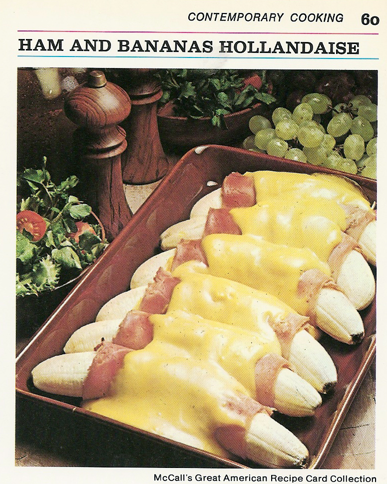

Banana Sausage

Ingredients
- 6 medium bananas
- 1/4 cup lemon juice
- 6 thin slices boiled ham (about 1/2 lb)
- 3 tablespoons prepared mustard
- 2 envelopes (1 1/4-oz size) hollandaise sauce mix
- 1/4 cup light cream
Instructions
- Preheat oven to 400F.
- Lightly butter 2-quart, shallow baking dish.
- Peel bananas; sprinkle each with 1/2 tablespoon lemon juice, to prevent darkening.
- Spread ham slices with mustard.
- Wrap each banana in slice of ham.
- Arrange in single layer in casserole.
- Bake 10 minutes.
- Meanwhile, make sauce: In small saucepan, combine sauce mix with 1 cup water, 1 tablespoon lemon juice, and cream.
- Heat, stirring, to boiling; pour over bananas.
- Bake 5 minutes longer, or until slightly golden.
- Nice with a green salad for brunch or lunch.
- Makes 6 servings.